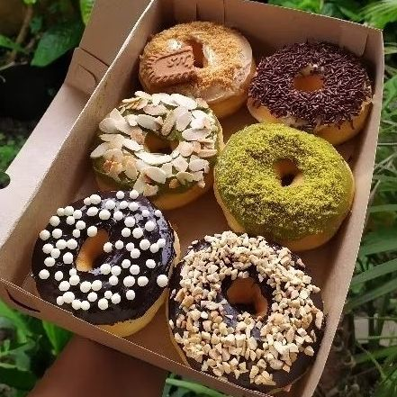
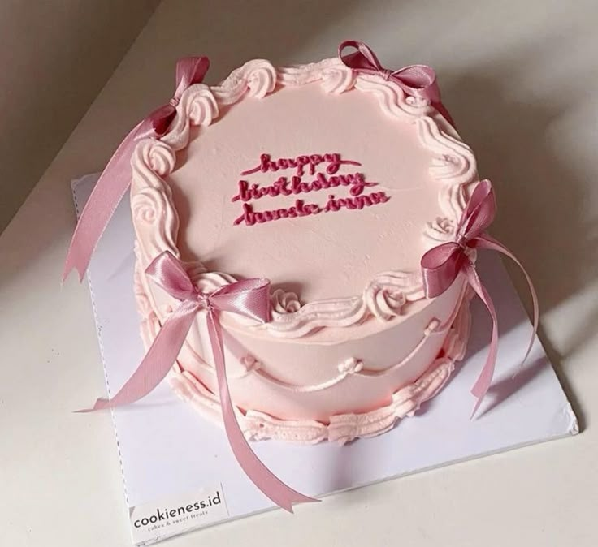
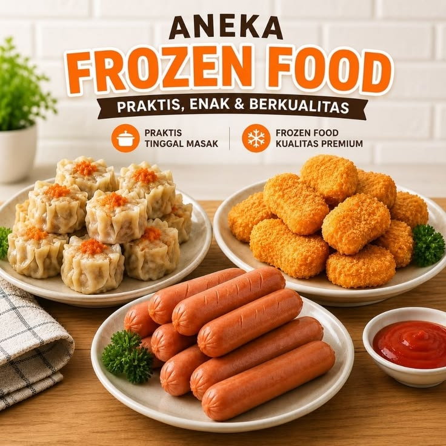
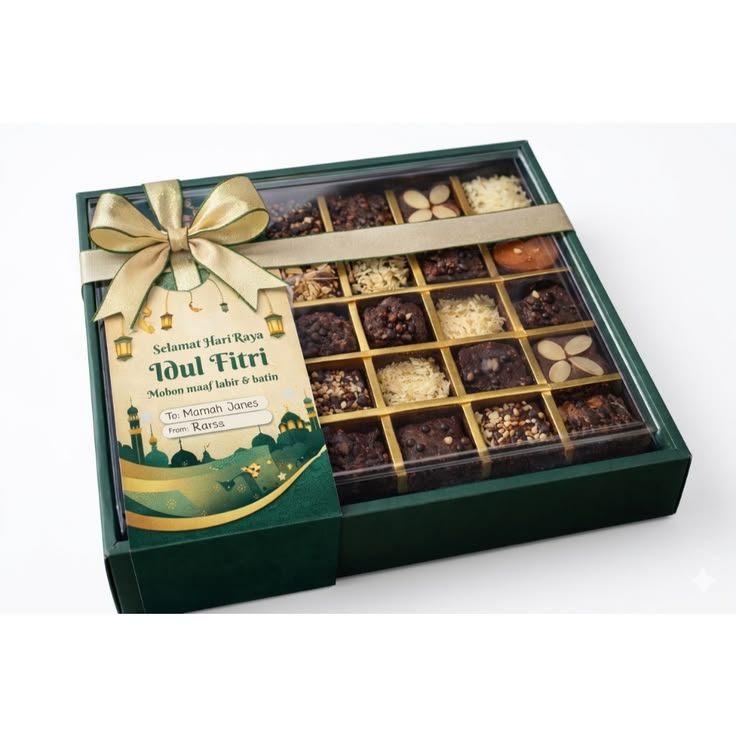

Menu Andalan
Apa aja yang bisa dipesan
Lima kategori jajanan andalan — klik untuk lihat daftar produk lengkap & harga di halaman menu.

Donat Kentang
Lembut, empuk, dengan pilihan topping manis klasik.
mulai Rp 22.500
Kue Tart
Cocok untuk ulang tahun & acara keluarga, desain custom.
mulai Rp 85.000
Frozen Food
Stok siap masak untuk simpan di kulkas, praktis kapan saja.
mulai Rp 35.000
Hampers Lebaran
Paket cantik untuk parsel, cocok dibagikan ke kerabat.
mulai Rp 120.000
Roti
Aneka roti isi, favorit untuk sarapan atau camilan sore.
mulai Rp 15.000*Harga contoh berdasarkan riset awal — mohon dikonfirmasi ulang dengan daftar menu resmi Upix sebelum publish.